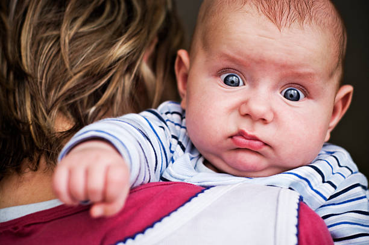
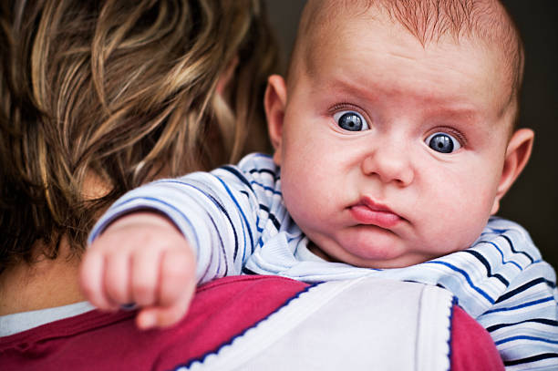

Watch 83 Now
Captain Kapil Dev led a team from India, seen as underdogs, to bring home the country’s first-ever World Cup title in the year 1983. Kabir Khan’s ‘83’ encapsulates the journey of this team that taught a nation to believe and to pin its hopes on its cricket players’ by returning home as a set of uniquely gifted world champions.


 
